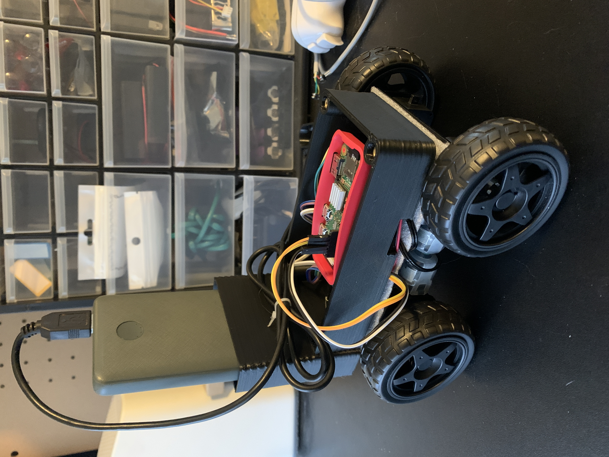

Cooper Wutzke
EWU Graduate
Bachelors in Computer Science

CW-ROV
Aluminum Sheet chassis with 4 TT Gear Motor, 3D printed cowl. I am starting simple and just working on the basics like communication and motor control. There are several challenges to solve with just a remotely operated vehicle first before I move on to something capable of mapping and sensor fusion. Currently the rover uses two Raspberry Pi's to communicate wirelessly, a Raspberry Pi 4 and a Raspberry Pi Zero W. The Raspberry Pi 4 runs a GUI Python app for controlling the movement of the robot. It sends data via MQTT while the Raspberry Pi Zero W attached to the robot (as seen below) hosts the MQTT server and runs a custom python script for translating MQTT motor commands into motor movement on the robot. The Raspberry Pi Zero W is setup to run the MQTT server and my python code as services using systemd, so all I have to do is plug in a battery and it's ready to receive motor commands.
Here is the rover running for for the first time. I decided on the first run to go with no speed control just for the sake of simplicity to start with, however this has translated to the robot struggling to turn as the only method of doing this with no speed control is to turn in place. I don't think there is too much weight on the robot but it is almost certainly poorly distributed based on how I designed the 3d printed upper shell (not smart). I theorize these TT gear motors have fairly low torque based on the fact that they draw 80 mA of current with no load and the yellow TT geared motor I have in my workbench draw 150 mA. There is a chance the black geared motors have a higher gear reduction so they may achieve similar torque as the yellow motors. The simplest solution is testing if swapping out the black motors for yellow ones results in better turning.
STM32G071 Board Rev 01
This is the first PCB of my own design. It is a 2 layer board built around a STM32G071 in a 32-LQFP package. This was a learning project for me so there are few added peripherals besides what comes with the MCU. It includes a 3.3v linear regulator for powering the board via 2-3 AA batteries or 1 18650 Li-ion cell, a 32Khz crystal oscillator for time keeping projects, and a red power LED. I built this board with JLCPCB's manufacturing specifications in mind so my goal is to write another post after I have ordered these boards and tested them to see if it's even possible to flash code to them. Hopefully I don't end up with a couple of little paperweights with STM32's I can't get booted up!
Raspberry Pi HMI
This RPI-HMI is a 7 inch backlit LCD display built around a Raspberry Pi 4. Designed for use as a mobile linux PC to run Arduino IDE and flash code to microcontrollers. In my upcoming robotics projects I will use it as HMI Touch Screen.
More later...
3D Printer
Creality 4.2.2 Mainboard for Ender 3 Pro shows no visible signs of damage yet refuses to accept new firmware. Others on the internet have said that manually driving the motors can cause sufficient current to be forced back through the stepper diode and fry the board.
More later...
Future SLAM Navigation
Microsoft Kinect for PC found at Puyallup Goodwill for $25. I immediately bought this thing. I could use the depth sensing ability it has to do some relatively accurate SLAM I'm sure... once I figure that bit out. I've already ran some tests with it and I was honestly surprised when everything in the dev kit I ran worked flawlessly.
More later...